오늘의 과제

박사오늘은 틀린 디테일만 본다. 어디서 처음 틀렸는지 찾는 게 목표다.

주판봇보이는 대로 고치면 됩니다! 눈이 이상하면 눈을 다시 칠하고!

초파리 연구원눈이 이상한 원인이 고개 각도일 수도 있어. 큰 것부터 순서대로.

X2점검표 다섯 항목으로 채점하겠습니다.
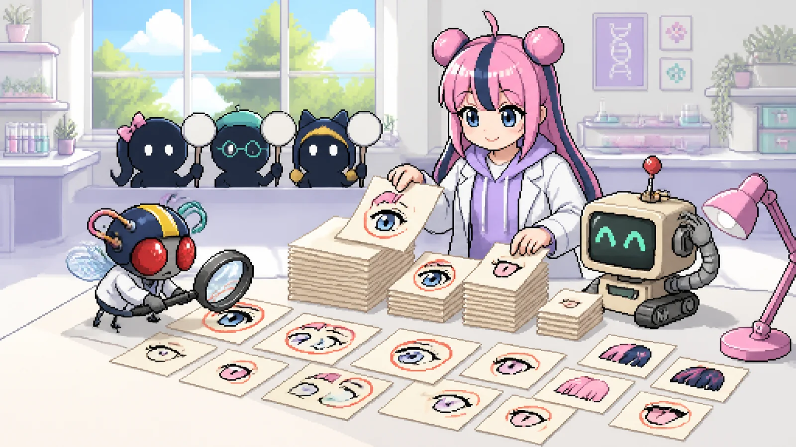
일부러 틀린 디테일 여덟 장을 모았습니다. 점검표 다섯 항목 중 어디서 처음 걸리는지 찾고, 고치는 문장 조각을 확인합니다.
그림 실력·코드·수식을 몰라도 됩니다. 실험을 눌러 보며 따라오세요.
자리와 각도 → 구조 → 정보량 → 칠하기 → 표정 순서로 보고, 처음 걸린 곳 하나만 고칩니다
옷이 어색하면 단추보다 먼저 치수가 맞는지 봅니다.
AI 그림 검수 팀은 이런 점검표를 위에서부터 체크하는 양식으로 쓰고, '처음 걸린 항목'을 기록합니다. 같은 항목이 자주 걸리면 요청 문장 자체를 고칩니다.


f2·f3은 ① 자리와 각도에서, f1·f4·f5는 ② 구조에서, f6은 ③ 정보량에서, f7은 ④ 칠하기에서, f8은 ⑤ 표정에서 처음 걸립니다.
한 그림에 실패가 여러 개면, 처음 걸린 것 하나만 고치고 다시 ①부터 봅니다. 큰 것을 고치면 작은 것이 저절로 풀리기도 합니다.
AI 그림은 처음 걸린 부위만 가림 영역으로 부분 수정하고(5부 3단계), 같은 항목이 반복되면 요청 문장을 고칩니다.
AI 그림의 눈이 어딘가 어색한데 무엇이 틀렸는지 모르겠습니다. 일단 다시 만들어 볼까요?
다시 만들기 전에 점검표 ①~⑤를 차례로 보세요. 원인을 모른 채 다시 만들면 같은 실패가 다른 모양으로 나옵니다. 처음 걸린 항목의 조각만 문장에 더합니다.
그림마다 증상을 보고 처음 걸리는 점검 항목을 고른 뒤, 연결된 원리와 고치는 프롬프트 조각을 확인합니다.
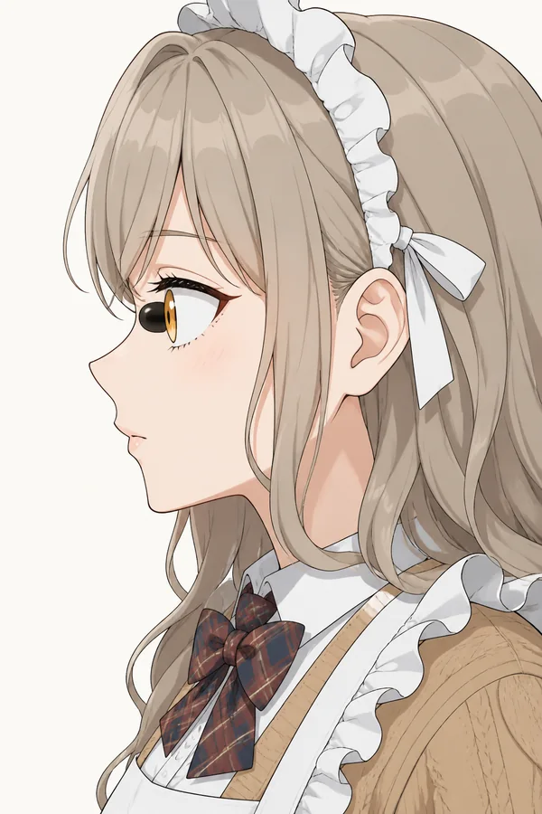
증상옆에서 본 눈의 동공이 눈 표면보다 앞으로 나와 있습니다.
연결된 원리1부 2단계 각막·동공
in side view the pupil sits behind the clear cornea, not on the eye surface
실제 결과: 실수가 요청대로 크게 재현됐습니다. 다만 모아의 리본이 왼쪽 귀가 아니라 보이는 쪽에 그려졌습니다. 그림을 고칠 때 리본 위치도 함께 확인하세요.
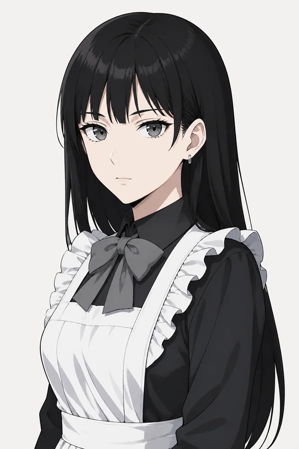
증상비스듬히 돌린 얼굴인데 두 눈이 똑같이 큽니다.
연결된 원리1부 3단계 공 위의 눈
three-quarter view, the far eye noticeably narrower than the near eye, both eyes following the curve of the head
실제 결과: 도구가 안쪽 눈을 이미 조금(약 0.8배) 좁혀 그려 실수가 약하게만 나왔습니다. 결과는 매번 다르니 직접 확인하세요. '같은 너비의 두 눈'이 어떻게 어색한지는 1부 3단계 실험 패널에서 고개 각도를 바꿔 보면 바로 보입니다.
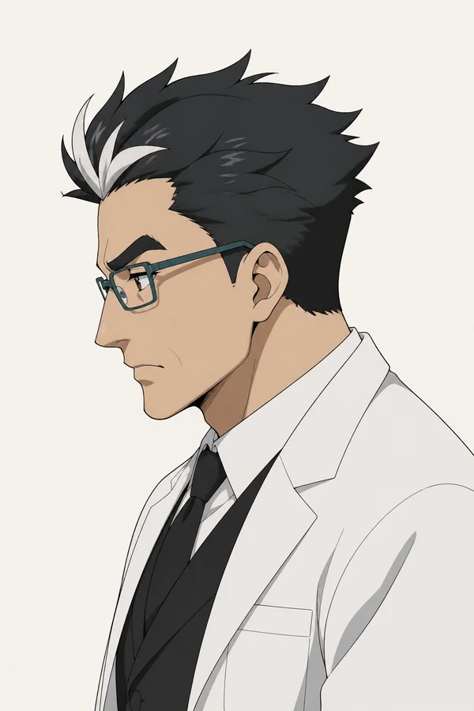
증상옆얼굴의 귀가 턱선 가까이 내려와 있습니다.
연결된 원리3부 2단계 귀 자리
ear placed between eye level and nose tip level
실제 결과: 도구가 귀를 제자리(눈 높이~코끝 높이)에 고쳐 그려 실수가 재현되지 않았습니다. 결과는 매번 다르니 직접 확인하세요. 낮은 귀의 모습은 3부 2단계 실험 패널에서 귀 위치를 내려 보면 볼 수 있습니다.
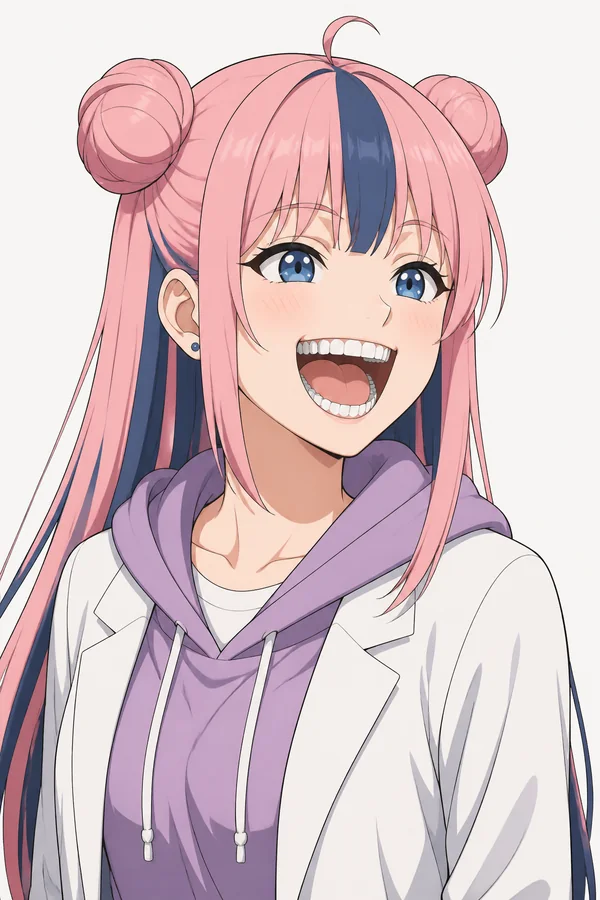
증상비스듬히 본 웃는 입의 안쪽 이가 이쪽을 보고 서 있습니다.
연결된 원리3부 4단계 어금니
three-quarter view, the back teeth recede inward toward the jaw hinge, upper teeth straight and lower teeth curving as a U
실제 결과: 도구가 이줄을 바르게(위 一, 아래 U) 그려 실수가 재현되지 않았습니다. 결과는 매번 다르니 직접 확인하세요. 어금니가 이쪽을 보는 모습은 3부 4단계 실험 패널에서 볼 수 있습니다.
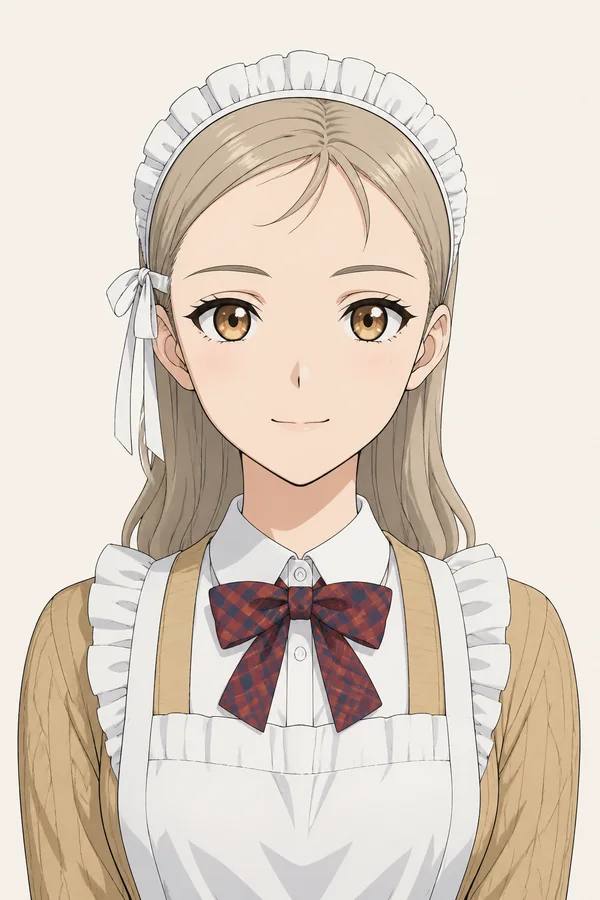
증상얼굴이 유난히 커 보이고 머리가 작아 보입니다.
연결된 원리4부 1단계 부피
hair with natural volume, the hair silhouette slightly larger than the skull
실제 결과: 실수가 요청대로 재현됐습니다. 리본은 오른쪽 귀 쪽에 그려졌습니다(설정은 왼쪽).
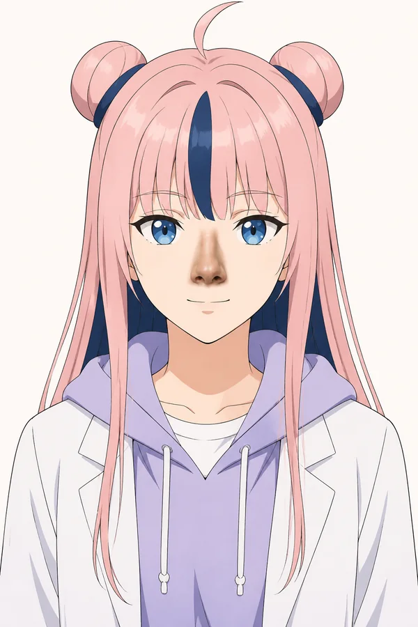
증상눈·입은 단순한데 코에만 콧구멍과 콧날이 진합니다.
연결된 원리3부 1단계 코 정보량
small nose shown only by its tip, the same level of detail as the simple eyes and mouth
실제 결과: 실수가 요청보다 더 크게 재현됐습니다. 코에만 주황 그림자가 들어가 눈에 가장 먼저 띕니다.
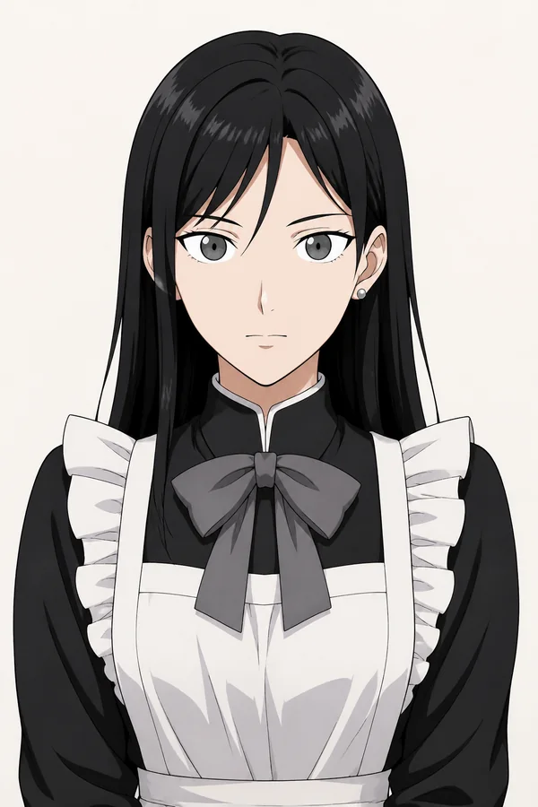
증상눈만 하얗게 떠 보이고 눈동자가 납작한 스티커 같습니다.
연결된 원리2부 1·2단계 흰자와 레이어
off-white sclera, darker upper iris under the eyelid, warm glow on the lower iris, one large and one small highlight
실제 결과: 실수가 요청대로 재현됐습니다. 아래 '직접 만들어 보기' 실습 2에서 눈만 다시 칠한 결과와 나란히 볼 수 있습니다.
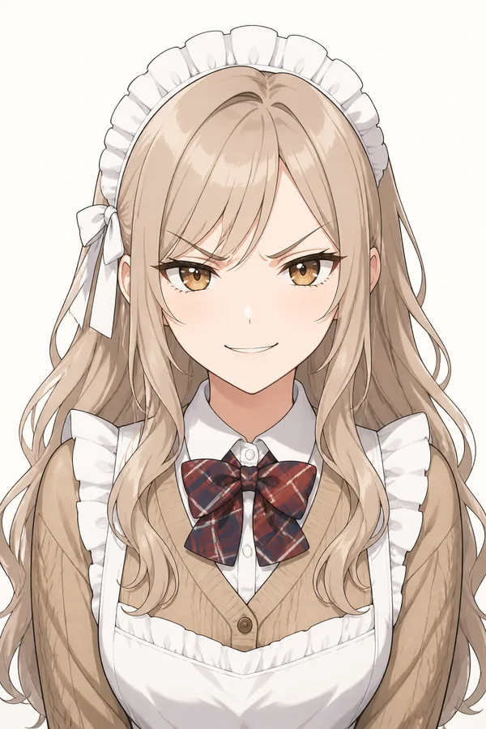
증상기쁜 얼굴을 원했는데 화가 난 듯 보입니다.
연결된 원리2부 3단계 눈썹과 눈
soft gently arched eyebrows, not raised at the outer ends, relaxed happy expression
실제 결과: 실수가 요청대로 재현됐습니다. 리본은 오른쪽 귀 쪽에 그려졌습니다(설정은 왼쪽). 6부 연습 과제 d1에서 눈썹만 고친 결과를 볼 수 있습니다.
디테일과 표정을 요청할 때 쓰는 말 가운데 나이를 어리게 읽히게 하는 신호가 몇 가지 있습니다. 아주 크게 반짝이는 눈, 크게 벌린 웃음, 볼 홍조, 정수리 높이 묶은 머리, 짧은 목이 겹치면 실제보다 어려 보입니다.
AI에게 '귀여운 표정', '반짝이는 큰 눈' 같은 말을 여러 개 겹쳐 넣으면, 성인 캐릭터가 어린아이처럼 그려지는 쪽으로 쏠리기도 합니다. 이 시리즈는 이런 그림을 만들지 않습니다.
막는 법: ① 성인 나이를 숫자로 적습니다(예: in her late twenties). ② 성인 비율을 적습니다(adult proportions, adult neck and shoulders). ③ 신호를 한두 개만 씁니다 — 반짝이는 눈을 원하면 입은 잔잔하게. ④ 학교 옷 이름 대신 옷의 소재·모양을 적습니다. ⑤ 결과가 어려 보이면 쓰지 않고 다시 만듭니다.
연결된 원리5부 1단계 디테일 문장 · 2부 3단계 눈썹과 눈
이 부에서 배운 원리를 그림 생성 AI(Genspark 등)로 직접 확인합니다. A는 이 페이지 그림을 실제로 만든 프롬프트, B는 원리를 하나 빼거나 바꾼 비교용 문장입니다.
참고 그림 내려받기: haru_anime_base · sia_anime_base · moa_anime_base · haru_sheet · sia_sheet · moa_sheet · doctor_sheet · fruitfly_sprites_6 · jupanbot_ref_genspark_v0 · pixel_style_ref_prev_cover
f2(같은 너비의 두 눈)를 부분 수정으로 고쳐, 처음 걸린 항목 하나만 바꾸면 되는지 확인합니다.
첨부: 해당 캐릭터의 refs/*_anime_base.png 또는 *_sheet.png
Illustration, vertical 2:3. Art style: high-quality anime illustration, clean confident lineart, two-tone cel shading, natural adult proportions. Match the attached reference images exactly (face, hair, colors, accessories). All characters are adults in their twenties (the Professor is an adult man in his thirties); modest outfits exactly as described. This is an intentional FAILURE example for a teaching page: draw the mistake described below clearly and convincingly, while everything else stays correct. Three-quarter view chest-up portrait of Sia (adult maid intern, long straight jet-black hair, no headdress, gray eyes, small silver earrings), wearing charcoal-black long-sleeved maid dress, large gray bow at the collar, long white frilled apron, head turned about 30 degrees. Intentional mistake: both eyes are drawn exactly the same width as in a front view, the far eye NOT narrowed, so the eyes look pasted on and seem to face the viewer while the head is turned. Plain off-white studio background. No text, no letters, no numbers, no logos, no watermark, no revealing clothing, not childlike, no school uniform, not resembling any famous anime character.
Inpainting only the far eye and its eyebrow: make the far eye noticeably narrower (about 60% of the near eye) and closer to the center line of the face, following the curve of the head. Keep the iris color, the near eye and everything else unchanged.
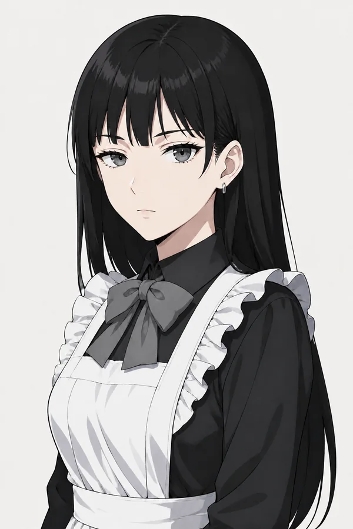
실제 결과: 거의 달라지지 않았습니다. A에서 안쪽 눈이 이미 앞쪽 눈의 약 0.8배로 조금 좁게 나와 있었고, 부분 수정 뒤에도 약 0.8배로 같습니다. 요청한 60%까지 좁히려면 가림 영역을 눈썹·눈 주변까지 넓히고 '눈 너비를 절반 가까이'처럼 더 과장해 적어야 합니다.
f7(스티커 눈)에 칠하기 문장만 더해, 눈이 얼굴에 녹아드는지 봅니다.
첨부: 해당 캐릭터의 refs/*_anime_base.png 또는 *_sheet.png
Illustration, vertical 2:3. Art style: high-quality anime illustration, clean confident lineart, two-tone cel shading, natural adult proportions. Match the attached reference images exactly (face, hair, colors, accessories). All characters are adults in their twenties (the Professor is an adult man in his thirties); modest outfits exactly as described. This is an intentional FAILURE example for a teaching page: draw the mistake described below clearly and convincingly, while everything else stays correct. Front-view chest-up portrait of Sia (adult maid intern, long straight jet-black hair, no headdress, gray eyes, small silver earrings), wearing charcoal-black long-sleeved maid dress, large gray bow at the collar, long white frilled apron. Intentional mistake: the whites of the eyes are pure bright white with hard edges and the gray irises are one flat color with no shadow and no glow, so the eyes look like flat stickers pasted on the face. Plain off-white studio background. No text, no letters, no numbers, no logos, no watermark, no revealing clothing, not childlike, no school uniform, not resembling any famous anime character.
Same image, keep the same framing. Change only the eyes: off-white sclera slightly warmer than pure white, darker upper iris under the eyelid, subtle warm glow on the lower iris (the iris stays gray), one large and one small highlight, line art around light areas tinted brown. Still no text.
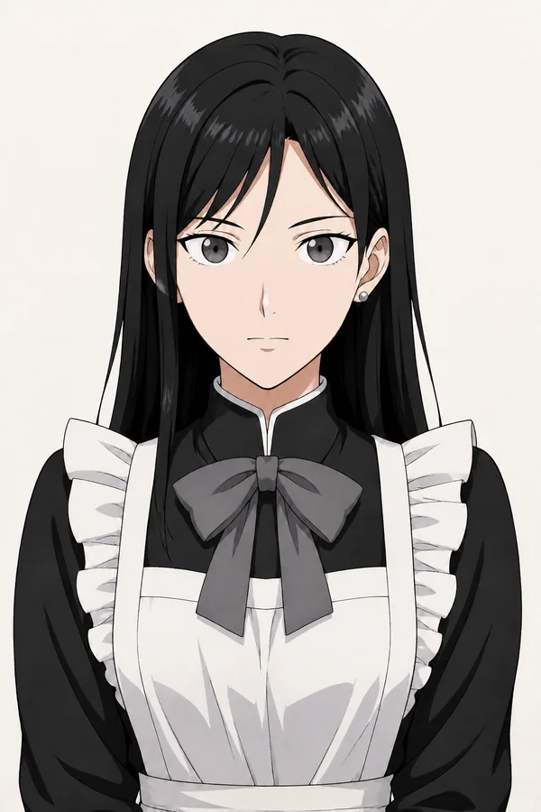
실제 결과: 눈만 바뀌고 나머지는 그대로입니다. 흰자가 피부 쪽으로 따뜻해지고, 눈동자 위가 어두워지며 하이라이트가 늘어 눈이 얼굴에 녹아듭니다. 아래쪽 따뜻한 빛은 약하게만 들어갔고 눈 색은 회색 그대로입니다.
이 부의 원리를 내 손으로 프롬프트에 옮겨 보는 과제 두 개입니다. 과제마다 목표 → 순서 → 넣을 프롬프트 → 확인할 것 → 예상 결과 → 자주 생기는 문제 순서로 적었습니다. 예상 결과 그림은 아래 프롬프트로 실제로 만든 그림입니다. 요청과 다르게 나온 곳은 '실제 결과'에 그대로 적었습니다. 결과는 매번 조금씩 다르니, 그림이 똑같지 않아도 '확인할 것'이 맞으면 성공입니다.
목표6부의 진단 순서로 f8(어긋난 눈썹)이 ⑤ 표정에서 처음 걸리는 것을 확인하고, 고치는 조각 한 줄만 넣어 새로 만듭니다.
왜 이 연습인가원인을 모른 채 다시 만들면 같은 실패가 다른 모양으로 나옵니다. 처음 걸린 항목의 조각만 더하면 무엇이 고쳤는지 분명합니다. 03 얼굴 편에서는 바로잡을 실패 그림을 첨부하면 실패를 따라 그렸으니, f8 그림은 첨부하지 않습니다.
첨부할 참고 그림: refs/moa_anime_base.png, refs/moa_sheet.png (f8 그림은 첨부하지 않음) — 참고 그림은 위 직접 만들어 보기에서 내려받을 수 있습니다.
Illustration, vertical 2:3. Art style: high-quality anime illustration, clean confident lineart, two-tone cel shading, natural adult proportions. Match the attached reference images exactly (face, hair, colors, accessories). All characters are adults in their twenties (the Professor is an adult man in his thirties); modest outfits exactly as described. Front view, chest-up portrait of Moa (adult maid intern, long ash-beige wavy hair, white frilled maid headband with a white ribbon over her LEFT ear, amber eyes), wearing camel knit cardigan over a white blouse, red and navy plaid bow tie, white frilled apron, a relaxed happy smile. Fix (most important): soft gently arched eyebrows, NOT raised at the outer ends; relaxed eyes; a warm happy expression. Light from the upper left. Plain off-white studio background. No text, no letters, no numbers, no logos, no watermark, no revealing clothing, not childlike, no school uniform, not resembling any famous anime character.
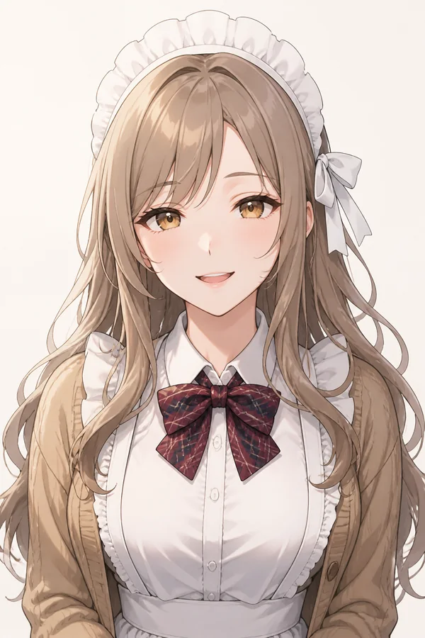
실제 결과: 성공. 눈썹이 완만한 산 모양으로 바뀌어 f8과 같은 웃는 얼굴이 기쁨으로 읽힙니다. 머리띠와 왼쪽 귀 리본도 그대로입니다.
| 문제 | 이렇게 고칩니다 |
|---|---|
| 눈썹이 여전히 올라갔다 | 'eyebrows lower at the outer ends than at the middle'처럼 위치를 비교로 적습니다. |
| 표정이 너무 크다 | 'gentle closed-mouth smile'로 입을 줄입니다. |
| 어려 보인다 | 아래 d2를 참고해 'an adult in her late twenties'를 맨 앞에 넣습니다. |
더 해 보기f1~f7 가운데 하나를 골라, 처음 걸린 항목의 조각만 넣어 같은 방법으로 고쳐 보세요.
목표6부 '나이 쏠림'을 막는 다섯 가지 방법을 문장으로 넣어, 반짝이는 눈과 큰 웃음을 쓰면서도 20대 성인으로 보이는 시아를 만듭니다.
왜 이 연습인가반짝이는 큰 눈과 크게 벌린 웃음은 나이가 어려 보이는 쪽으로 쏠리는 신호입니다. 성인 나이와 비율을 숫자로 적고, 다른 신호(홍조·높이 묶은 머리)를 빼면 쏠림을 막을 수 있습니다.
첨부할 참고 그림: refs/sia_anime_base.png, refs/sia_sheet.png — 참고 그림은 위 직접 만들어 보기에서 내려받을 수 있습니다.
Illustration, vertical 2:3. Art style: high-quality anime illustration, clean confident lineart, two-tone cel shading, natural adult proportions. Match the attached reference images exactly (face, hair, colors, accessories). All characters are adults in their twenties (the Professor is an adult man in his thirties); modest outfits exactly as described. Front view, chest-up portrait of Sia (adult maid intern, long straight jet-black hair, no headdress, gray eyes, small silver earrings), wearing charcoal-black long-sleeved maid dress, large gray bow at the collar, long white frilled apron, an adult woman in her late twenties, laughing brightly. Age guard (most important): adult proportions, adult neck and shoulders, a slim oval face; bright sparkling eyes and a wide open laughing mouth, but no blush stickers, no pigtails, hair down as in the reference. Light from the upper left. Plain off-white studio background. No text, no letters, no numbers, no logos, no watermark, no revealing clothing, not childlike, no school uniform, not resembling any famous anime character.
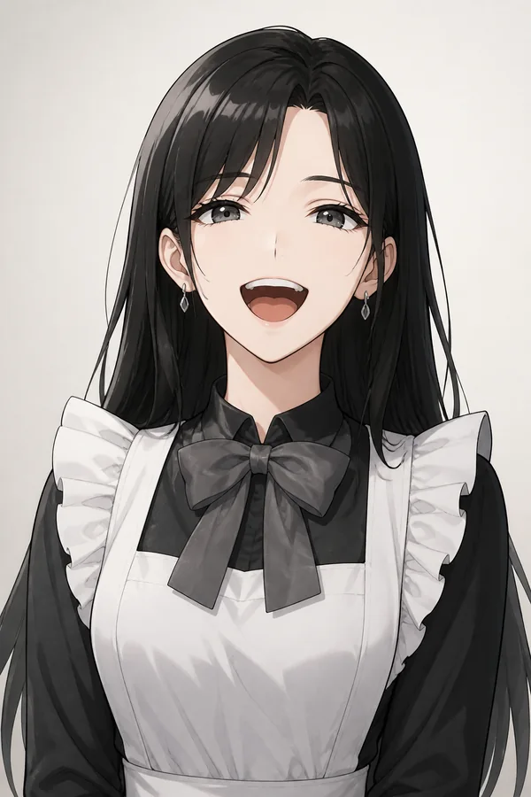
실제 결과: 성공. 반짝이는 눈으로 입을 크게 벌려 웃지만 갸름한 얼굴과 긴 목으로 20대 성인으로 보이고, 홍조 스티커나 높이 묶은 머리는 없습니다.
| 문제 | 이렇게 고칩니다 |
|---|---|
| 어려 보인다 | 쓰지 않고 다시 만듭니다. 'laughing brightly'를 'smiling brightly'로 줄이고, 'eyes not oversized'를 덧붙입니다. |
| 표정이 굳었다 | 'natural joyful expression'을 덧붙입니다. |
| 귀걸이가 사라졌다 | 'small silver earrings as in the reference'를 덧붙입니다. |
더 해 보기같은 문장에서 'Age guard' 줄만 지우고 새 대화에서 만들어, 쏠림이 생기는지 비교해 보세요. 어려 보이는 결과는 공유하지 말고 지웁니다.
| 항목 | 주판봇 | 초파리 |
|---|---|---|
| 맞힌 개수(8개 중) | 4 | 8 |
| 원리(진단 순서) | 2 | 9 |
| 고치는 조각의 정확성 | 3 | 8 |
| 합계 | 9 | 25 |


점수는 이야기 속 예시입니다. 실제 그림을 평가한 값이 아닙니다.
| 주제 | 한 줄 | 작업에서는 |
|---|---|---|
| 1단계 진단 순서 | 자리와 각도 → 구조 → 정보량 → 칠하기 → 표정 | 처음 걸린 곳 하나만 고치기 |
| 실패 8종 | 동공·두 눈 너비·귀·어금니·머리 부피·코·스티커 눈·눈썹 | 처음 걸린 항목의 조각만 더하기 |
| 나이 쏠림 | 큰 눈·큰 웃음·홍조가 겹치면 어려 보인다 | 성인 나이·비율을 숫자로 적기 |

이 페이지에 나온 개념·방법·비유·쓰임을 모았습니다. 검색하고, "설명 보러 가기"로 본문에 돌아갑니다.
지식 색인을 출처와 함께 파일로 내려받습니다. 서지 관리는 BibTeX·RIS, 온톨로지 편집은 Turtle, 그래프 도구는 CSV, 여러 페이지 합치기는 kg.json입니다.